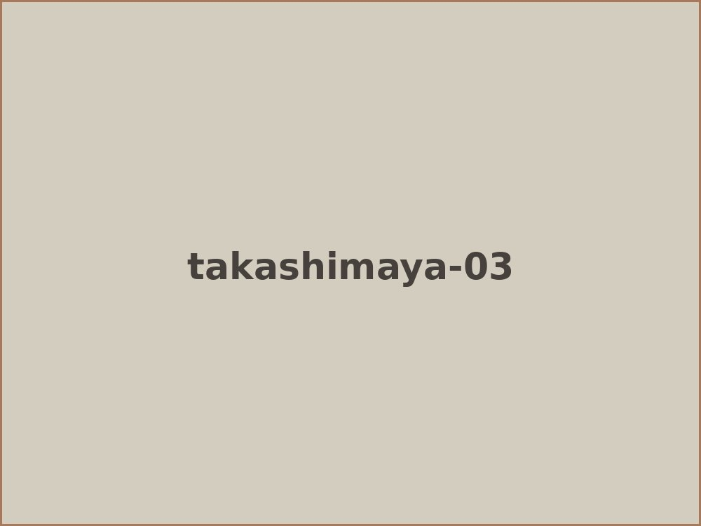
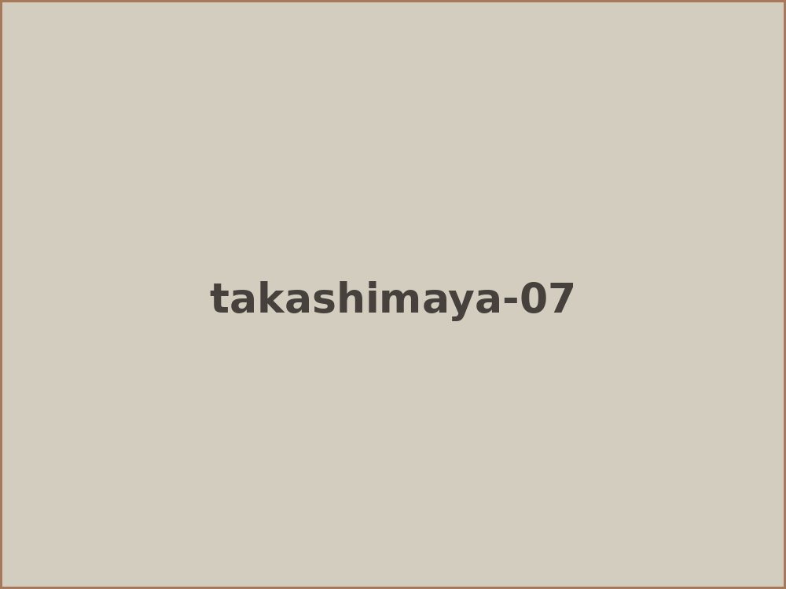
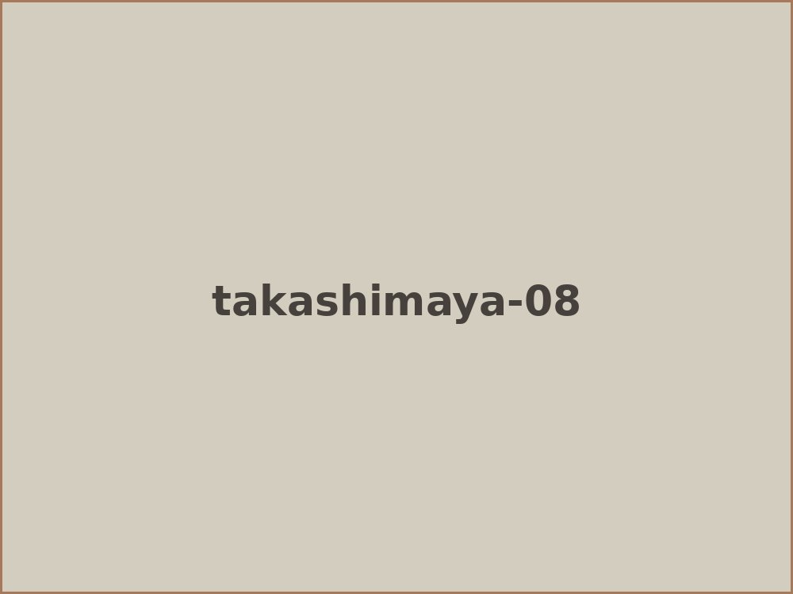
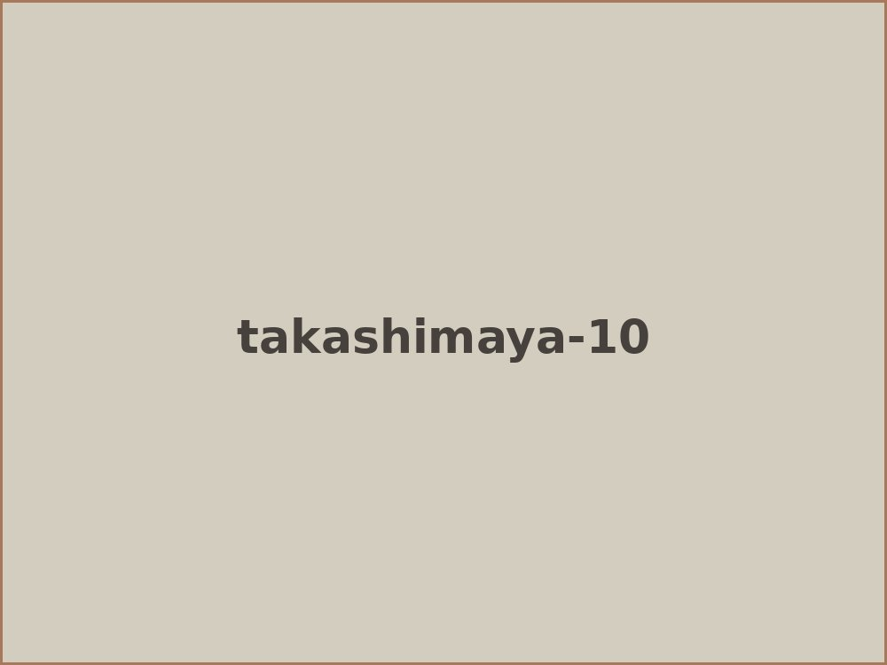

８月に横浜高島屋でのグループ展に参加させていただきました。 この展覧会は８人の彫刻科がさまざまな異なる素材を使って制作した彫刻を展示したもので とても楽しい展覧会になりました。

同じ彫刻でも、木彫、金属、塑像、繊維、石など、 色々な素材から造られた違いが面白く、楽しい雰囲気になりました。
自分は石の素材で小さい作品を主に、初めて百貨店の展示に参加させていただき 楽しい時間を過ごすことができました。




暑い時期にもかかわらず、たくさんの方に来ていただき本当にありがとうございました。 自分にとって色々な気付きもあって貴重な経験をさせていただきました。